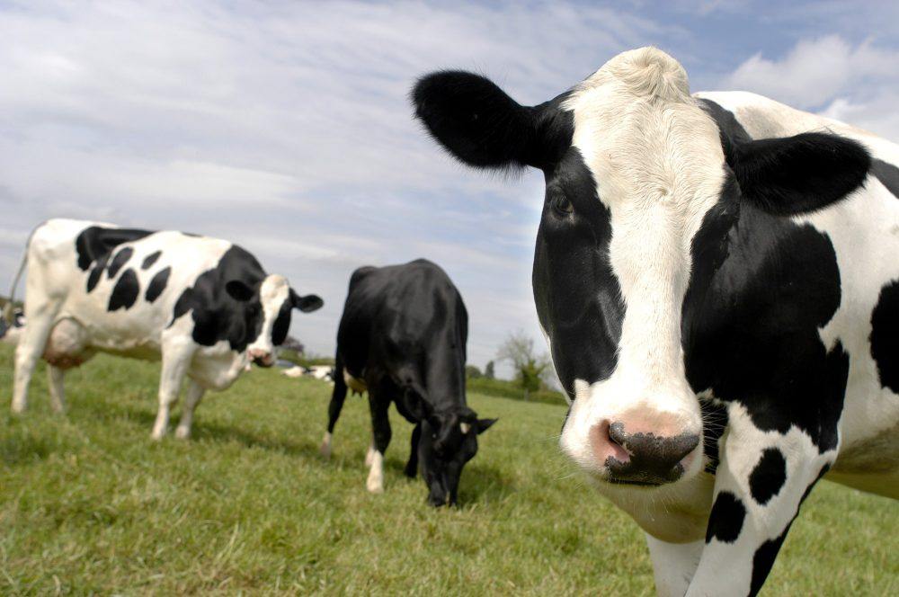
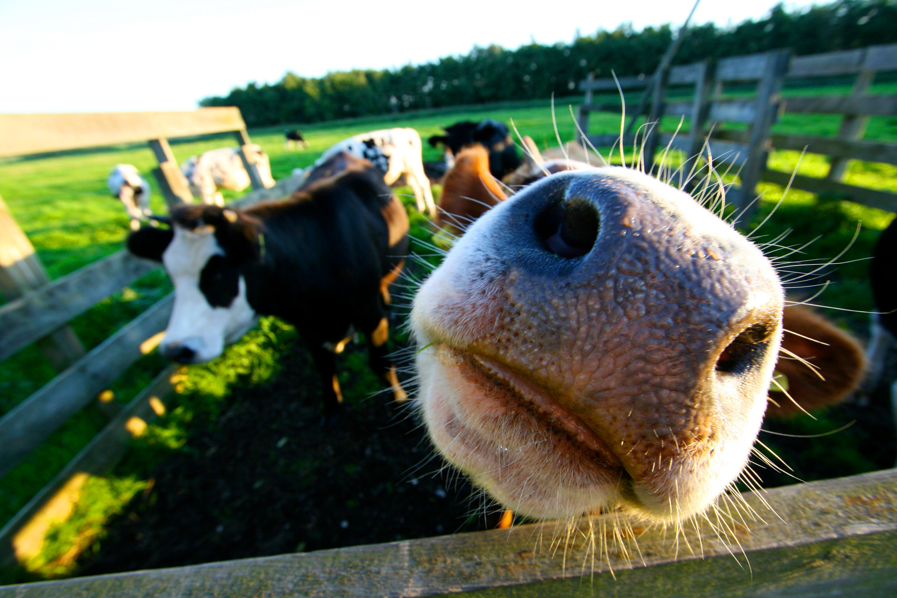

Somos una empresa ganadera con animos de triunfar en el mercado!. Como Objetivo tenemos ganar el corazon de los bolivianos y poder brindar los mejores alimentos a todas las casa del país.
Martin Álvarez Gómez fué la mente maestra en nuestra empresa. En 2015 inicio con el proceso de creacion de esta, ya que siempre fue amante de la carne y un gran chef. Nuestro ganado es cuidado con mucha cautela y dedicacion, cuidamos la higiene ante todo para poder evitar infecciones y tenemos un control de procesos muy adecuado a la actualidad.
